筛网大全
39 项 · 已选 0 项
电焊网
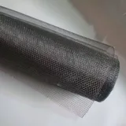
建筑网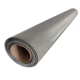
不锈钢筛网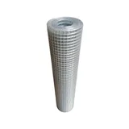
热镀电焊网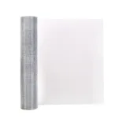
冷镀电焊网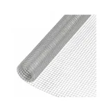
砌墙网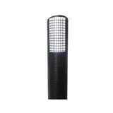
土工格栅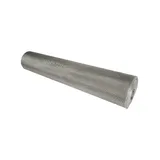
轧花网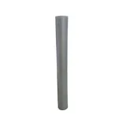
铝网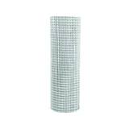
镀锌网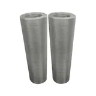
不锈钢电焊网片网
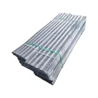
收口网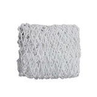
网绳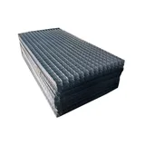
镀锌片网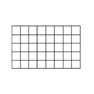
包塑片网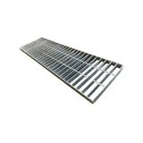
钢格板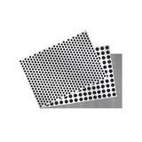
冲孔网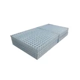
建筑用网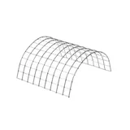
不锈钢片网围栏网
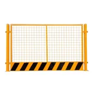
基坑护栏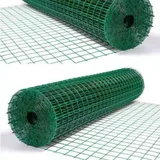
包胶电焊网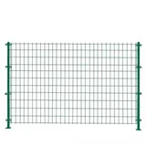
护栏网类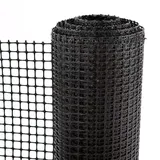
土工格栅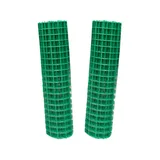
包胶荷兰网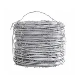
刺网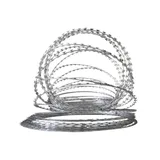
刀片网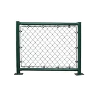
球场围网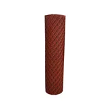
钢板网塑料网
防滑胶
草皮
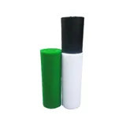
胶网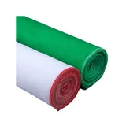
纱窗网建筑绿网
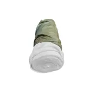
土工布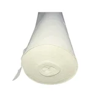
过滤网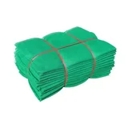
安全网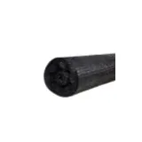
遮阳网保温胶水
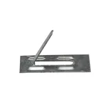
保温钉/胶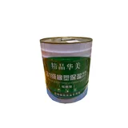
保温胶分样筛
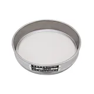
分样筛